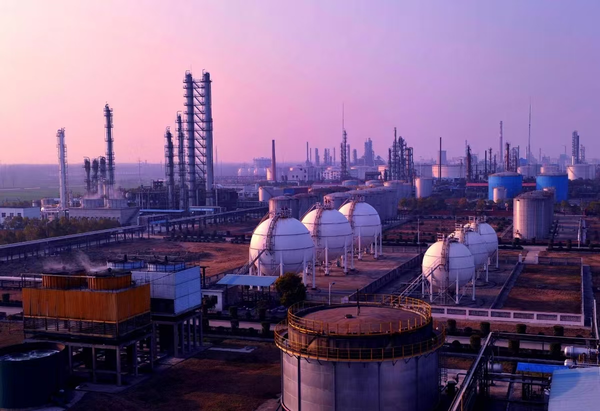
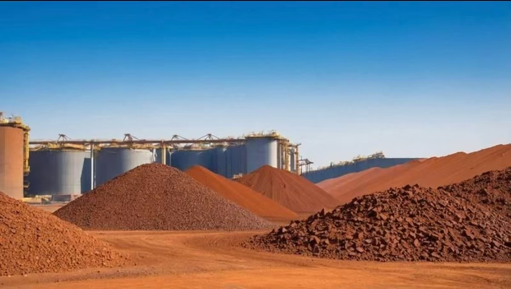
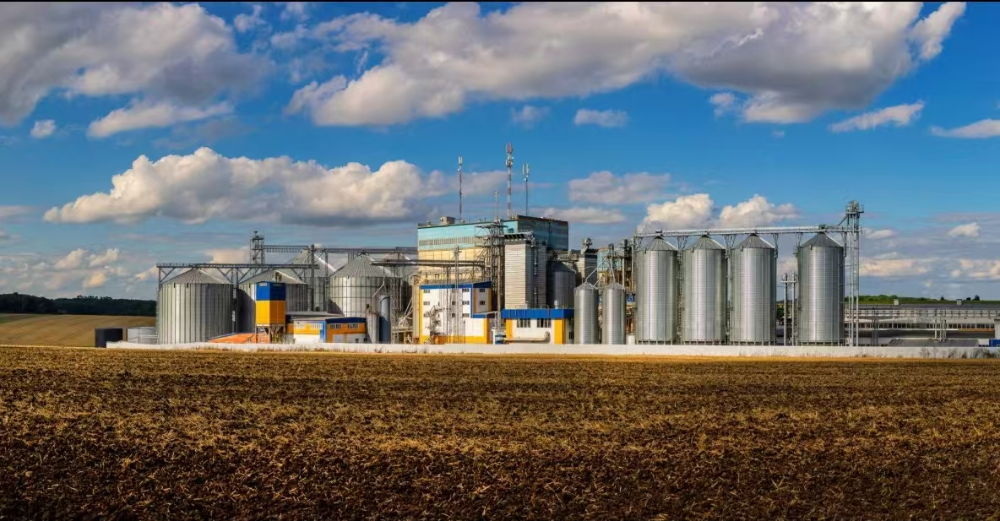

BUSINESS SECTORS
Integrated resources and supply chain services built on global commodities trade.

ENERGY & CHEMICALS
Energy & Chemicals
Mivora's LPG distribution network covers the Middle East, North Africa and Asia, providing integrated services from storage facilities to end delivery.
- Oil and natural gas trading and LPG distribution
- Full-category PE / PP / PVC plastic pellet supply
- Petrochemical trading across aromatics, olefins and basic chemical feedstocks
- Blending, inspection, warehousing and hazardous materials logistics management

MINERAL RESOURCES
Mineral Resources
The mineral resources business covers iron ore fines, lumps, pellets and other categories, serving steelmakers in China, Southeast Asia and the Middle East.
- International trade of iron ore and mineral resources
- Integrated mine-to-port-to-steel-mill supply chain
- Blending, inspection and end-to-end logistics services
- Stable supply capability for steel manufacturing customers

AGRICULTURAL TRADE
Agricultural Trade
The agricultural trade business focuses on wheat, barley, corn and other staple grains, using Turkey's geographic advantage to connect Black Sea production areas with the Middle East and North Africa.
- Global sourcing and distribution of grains and other agricultural products
- Strategic position in the Black Sea grain corridor
- Quality control systems aligned with import quarantine requirements
- Traceability from origin sourcing to final delivery